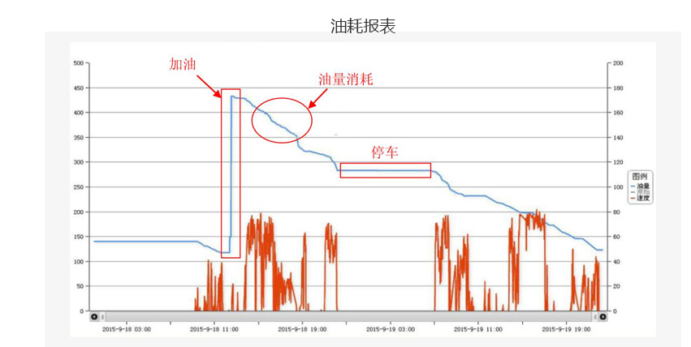

您的油箱 是否也被偷过油？
发布时间： 2016-04-01 16:05:28 作者：管理员
商用车/工程机械油耗管理
企业燃油消耗的精确统计是成本管理的一大难题，物流运输企业油料费用占运营成本的近30%，工程企业的设备种类多、作业任务多、施工工艺杂，不同设备的油耗差异大；而且油料的监守自盗及司机不良驾驶习惯行为也是造成油料异常损耗的重要原因。虽然物流运输行业已普遍安装传统车载GPS系统，部分工程机械设备也已安装车载GPS系统，但在油耗数据采集和应用上还存在短板，或无油耗统计功能，或虽有油耗功能却缺乏高精度的数据支持，当前油耗管理仍依赖于司机加油登记、油箱加锁防盗、油箱浮标油量监控、定额油耗奖惩、定额油量承包等传统经验，缺少有效的高科技手段的支撑，使用效果很不理想。
油耗管理的传统方式及其弊端
- 油箱防盗
- 1、措施：油箱加锁、加封口滤网等。
- 2、弊端：擅于偷油的黑点可采用细管抽油、油箱排污口抽油、油管抽油等各种方式，依然可以轻松抽油。油箱的防盗措施只是企业的心理安慰，几无作用。
- 定额管理或承包
- 1、措施：采取定额油耗管理或承包方式，即设定单位产量油耗上限，定额承包或按照节超实施奖惩方案。
- 2、弊端：物流车辆运输线路、实载率、车况、路况不同，工程机械的作业任务、作业工艺、设备不同 ，外加天气、司机驾驶操作习惯差异等各种不确定因素，单位产量的油耗有明显差异，难以形成公平合理的目标油耗标准，油耗的定额数据通常是依靠经验设定，往往只能采用比实际油耗更高的油耗上限作为假定标准。为取得更高的定额油耗，司机容易形成利益联盟，采用各种手段集体向企业要求更高的油耗定额，例如：协同从油箱抽油制造作业油耗虚高；定额试驾司机故意放高油耗等等。即便确认的定额也往往蜕变为油料成本固化、有奖难罚，无法通过引导改善操作习惯降低油料成本，难以推行有效的计划管理与核算，特别是一人多车（机）、一车（机）多人的轮班作业制，使针对每台车辆（设备）或每个司机的油耗更是难于核算。
由于以上种种的难点，有些企业会采取“大包”或“挂靠”的经营模式，但随之带来的是管理和安全上的众多隐患。企业迫切希望有更高科技的精准油耗管理系统以提高管理水平，控制油耗异常，切实推进节能减排工作。
沃管车油耗管理系统是一款专为企业的车队管理者设计的油量监控系统，采用无接触式超声波技术探测油位高度，相比油尺或流量计等传感器具有无损安装、测量精度高、稳定性好等特点，超声波油位传感器的内置程序对油量高度信号进行智能处理后将油量信息通过沃管车智能终端发送到系统平台，解析后生成油量报表。
沃管车智能终端还具有自动统计司机驾驶行为分析数据功能，为管理者提供有效的考核依据，督促驾驶人员改变急加减速、急转弯等不良行车习惯，提高行驶安全性和降低油耗及车辆损耗。根据有关权威机构统计结果，职业驾驶员的操作技能对车辆能耗影响达12%，普通驾驶员驾驶习惯对燃油经济性影响范围可达30%
沃管车油耗管理系统可面向各种车辆（如物流车、公交车、客运车、搅拌车、环卫车、工程机械等）数字化记录车辆加油、耗油情况，广泛用于防范油量异常损耗、优化运营成本、辅助统计决策等
